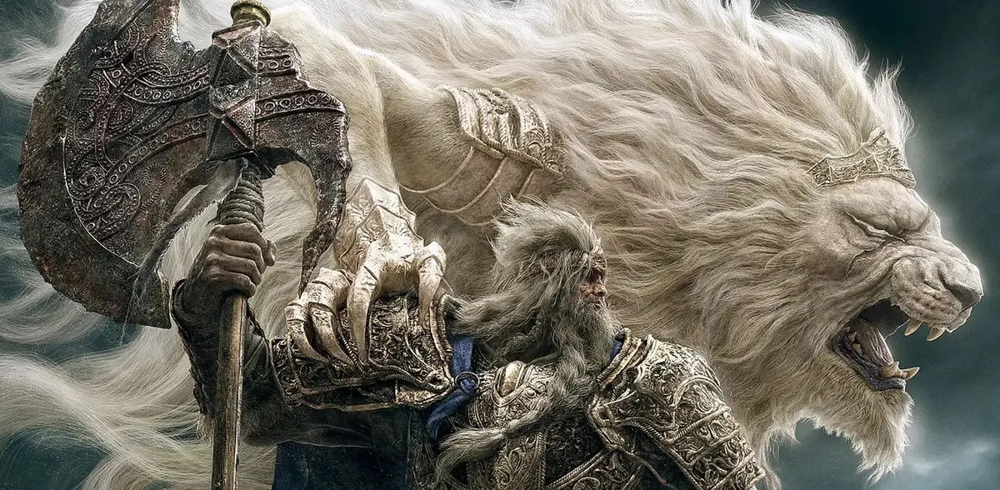
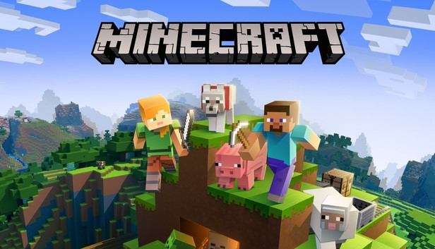
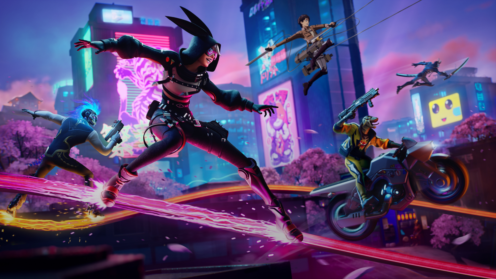

Felicidades, has entrado a mi pagina web correctamente,
sigue bajando para ver mas informacion

como los videojuegos han influido en la historia hasta el dia de hoy
halla por 1972, el mundo empezo a conocer el
primer videojuego popular de la historia:
pong habian 2 rayas se jugaba de a dos personas
y ganaba el que mas puntos tuviera y desde ese
momento fueron evolucionando mas y mas, a
continuacion te mostrare una lista de todo
lo que veremos en esta pagina web.
Esta es una lista de los vieojuegos que mas espera la gente en 2023 entre los que estan:
Son los videojuegos mas esperados debido a que algunos son continuaciones
de sagas populares como: assassion creed o Call of duty, y por otro lado
estan entregas totalmente nuevas como: Starfield.
Ya hemos hablado sobre videojuegos muy esperados, realistas, continuaciones
que prometen mucho pero ahora es momento de analizar a los mas iconicos,
los que marcaron un antes y un despues en la historia, los que todo el
mundo conoce, ha jugado, o escuchado hablar de ellos, a continuacion
veremos los mas importantes:
He seleccionado estos 5 juegos porque han sido los mas influyentes en los ultimos años
y cada uno tiene algo que lo hace especial, por ejemplo: En Minecraft la imaginacion es el limite,
mediante el uso de mods que ha creado la comunidad se han hecho cosas increibles que revolucionan
la jugabilidad de forma brutal, ademas de la creacion de series como: Los squid craft games,
Minecraft extremo, Qsmp, series hechas por y para los creadores de contenido.

Valorant es actualmente de los juegos mas activos en los e-sports de forma profesional y competitiva,
debido a su jugabilidad tan distinta con cada uno de los agentes, sin mencionar compleja y estrategica.
Fortnite se hizo popular debido a su mecanica unica de la construccion halla por 2017 y hoy en dia todo el mundo
lo juega por su diversion, sus objetos locos que refrescan al gameplay para evitar caer en lo repetitivo,
o por sus colaboraciones con famosos, peliculas o animes, como Dragon ball, attack on titan, avengers, spiderman, etc.

Gta 5 tiene una cantidad enorme de jugadores actualmente, gracias a las creaciones de la gente en el online
como las carreras o parkour, desafios de tiempo, etc. todo esto a pesar de haber salido hace 10 años, y lo que mas
esta esperando todo el mundo es el Gta 6
Red dead redemption 2 cuenta con la que a mi parecer es la mejor historia jamas contada en un videojuego,
con un desarrolo de personaje simplemente brillante y muy bien logrado, graficos mega realistas y una historia
tan bien contada e inmersiva que sientes que tu mismo lo estas viviendo.